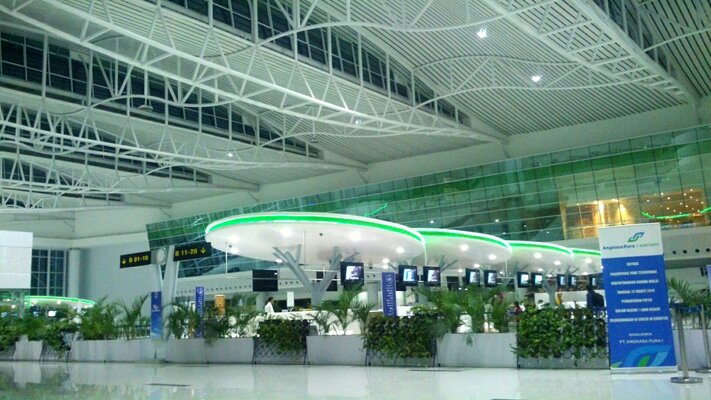
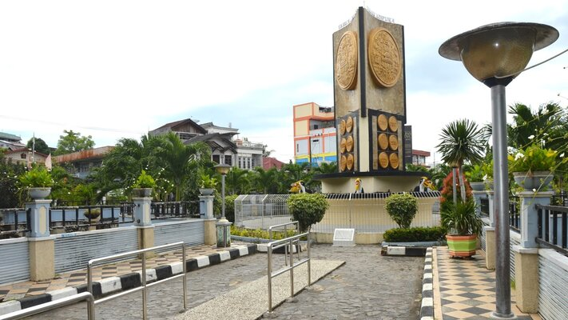

Balikpapan
Clean, Beautiful, Safe, and Comfortable City

The Gateway to East Kalimantan
Balikpapan is the gateway to the economy of East Kalimantan because all economic activities must pass through this city. Semayang Harbor and Sultan Aji Muhammad Sulaiman Airport are two of the busiest and most important entrances.
Adipura Kencana Awardee
Adipura is an award for cities in Indonesia that have succeeded in cleaning and managing the urban environment. Adipura is organized by the State Ministry of Environment and Adipura Kencana is an award for cities that have won 5 Adipura awards in a row.

Culture